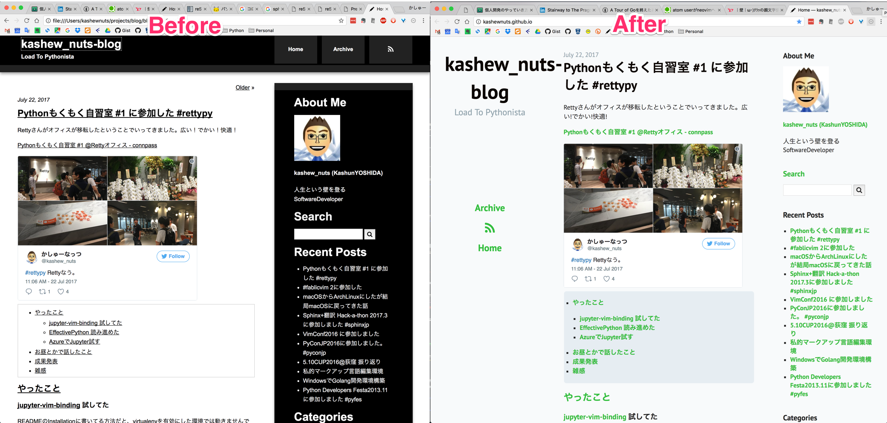

Blogのテーマを変更しました
こんな感じになりました。(画像は拡大してご覧ください)

経緯
Blog自体は Sphinx 拡張の Tinkerer で作成しています。
TinkererはBlogテーマが充実してるとは言えないため、デフォルトで同梱されているものをもとにカスタムしたものを使用していました。ところがライブラリのアップデートの影響なのか、いつの間にか各記事にアクセスするとサイドバーの表示が壊れていたので、これを期に flat ベースにBlogテーマを作り直しました。
flatテーマにした理由
他のデフォルトで同梱されてるテーマで確認したところ全滅で、flatテーマだけがちゃんと動いたからです。
ちなみに新規プロジェクトで作り直したら上手くいったので、既存の記事かなにかが悪さをしていたのかもしれません。 ただ追うのがつらそうだったので、諦めて心機一転してテーマを変えることにしました。
カスタマイズした項目
以下の対応をした結果が現在のBlogです。
- タイトルの表示位置を調整した。
- SNSボタンを付け直した。
- navigationに表示する項目を追加した。― Archive, RSSボタン
- google_analyticsを追加する。→もとの設定[htmlファイルのみ]を流用。
- discusを追加する。→ もとの設定[conf.pyのみ]を流用。
- 以下で枠が表示されないのでCSS調整
- contentsディレクティブ
- Tableディレクティブ？ (コロン”:”で単語をくくるやつ)
- 常時SSL接続対応 (後日対応)
- リポジトリのSettings -> GitHub Pages -> Enforce HTTPS のチェックボックスをON
- 混合コンテンツ の解消 (HTTPとHTTPSが混在しているのをHTTPSのみにした)
- JavaScriptのタグエラー解消
プロジェクトのリポジトリをアップデート
Blogを作成している元のリポジトリもちょっとアップデートしました。項目は以下です。
- プロジェクトのリポジトリをGitHubへ移行
- READMEの設置
プロジェクトのリポジトリをGitHubへ移行
記事自体はGitHub Pagesを使用しているのですが、作成元のプロジェクトはBitBucketでの管理のままになっていました。
理由はプライベートリポジトリを使用したかったからですが、現在はGitHubに課金しておりPrivateリポジトリを作成できるので移行しました。BitBucketで管理するの、Blogを書いていない時期にアカウント管理の仕方が変わったりとかで面倒になっていたんですよね…
READMEの設置
まさかと思いましたが書いてませんでした (な、なんだってー！）
これを書いてないせいで新しいPCをセットアップした時どうするか思い出す必要があったり、公開前に確認するとき「なにするんだっけ？」となっていたのでこれを期に。
やっぱりREADME大事。ちなみに README.rst で書いていたらREADMEもビルド対象に含まれてしまったので、READMEだけMarkdownで書いてしまったけど、これはconf.pyの exclude_patterns とかに書いたほうがいいかもしれない。